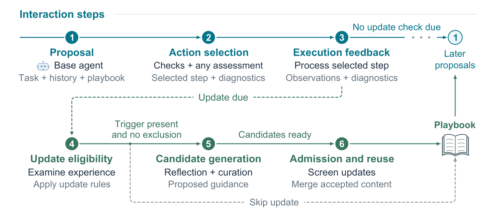

Rice University
Master's degree, Electrical and Computer Engineering
Houston, Texas, USA

I work on reliable and efficient language agents, with a focus on how agents act, learn from experience, and use their computational budgets. I am also interested in AI and data science for healthcare.
I completed my master's degree in Electrical and Computer Engineering at Rice University and my bachelor's degree in Electronic Information Science and Technology at Fudan University.
Research interests
Agent reliability · Context adaptation · Post-training data · Computational efficiency · Machine Learning for Healthcare
Master's degree, Electrical and Computer Engineering
Houston, Texas, USA
Bachelor’s degree, Electronic Information Science and Technology
Shanghai, China
DuoGate links action control with selective context adaptation, using execution outcomes and correction feedback to guide learning. Separate gates determine when to learn and which lessons to retain for later decisions.

Developing a GDPval-inspired corpus built from O*NET occupations and public workplace documents. Tasks pair realistic requests with supporting files, explicit deliverables, and criterion-level evaluation rubrics.
Implemented a WorkGenesis-based pipeline with source provenance, reproducible occupation schedules, resumable parallel generation, deduplication, bounded retries, and file-integrity checks. The broader pipeline supports independent solving, rubric-based judging, defect attribution, and teacher-trajectory collection.
Designed a task-group architecture in which related coding tasks share a persistent exploration agent while keeping planning, implementation, and evaluation separate. The goal is to reduce repeated retrieval and context-processing costs.
Built reproducible task grouping using TF-IDF and cosine similarity, asynchronous evidence exchange, and task-scoped access controls. Implemented a CodeProjectEval harness with isolated outputs, official-test scoring, and request-level token accounting that counts shared exploration once per group.
Additional research · Health
Developed a patient-level classification pipeline for whole-slide histopathology using frozen CONCH embeddings and gated-attention multiple-instance learning, incorporating age and anatomical location. Audited a cohort of 255 patients and 260 usable slides, and compared hierarchical and global approaches across ten diagnostic classes. Improved ten-class accuracy from 56.08% to 63.14% through model refinement and validation-based epoch selection.
Reproducible analysis of inpatient and outpatient encounter data across 44 Austin ZIP codes and 22 quarters. Studied geographic variation in recorded COPD care using observed-to-expected ratios, statistical comparisons, and sensitivity analyses.
Teaching Assistant · Rice University
Teaching Assistant · Rice University
Conference Reviewer